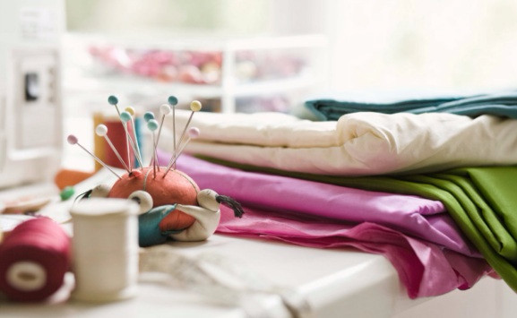
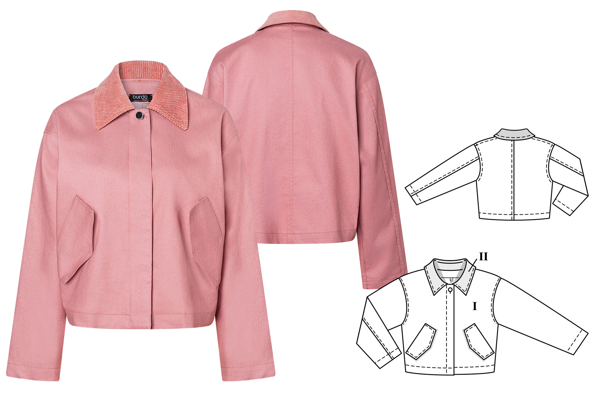
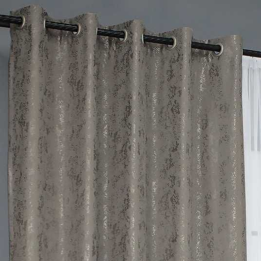
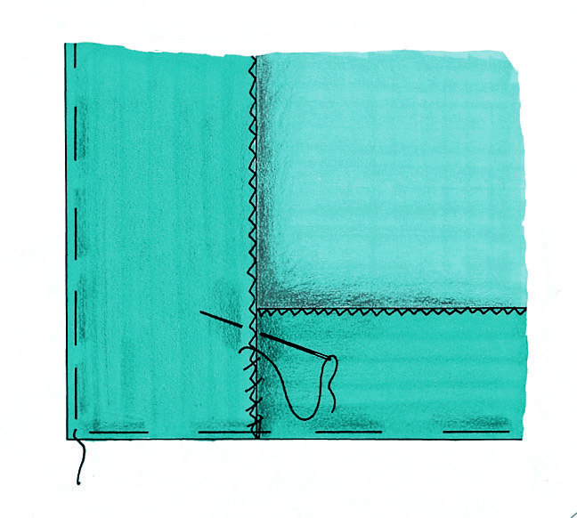
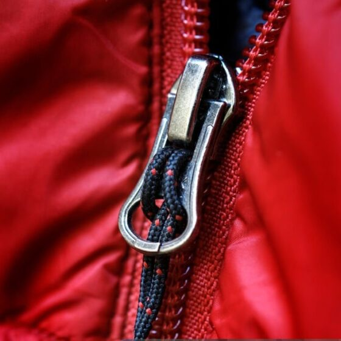
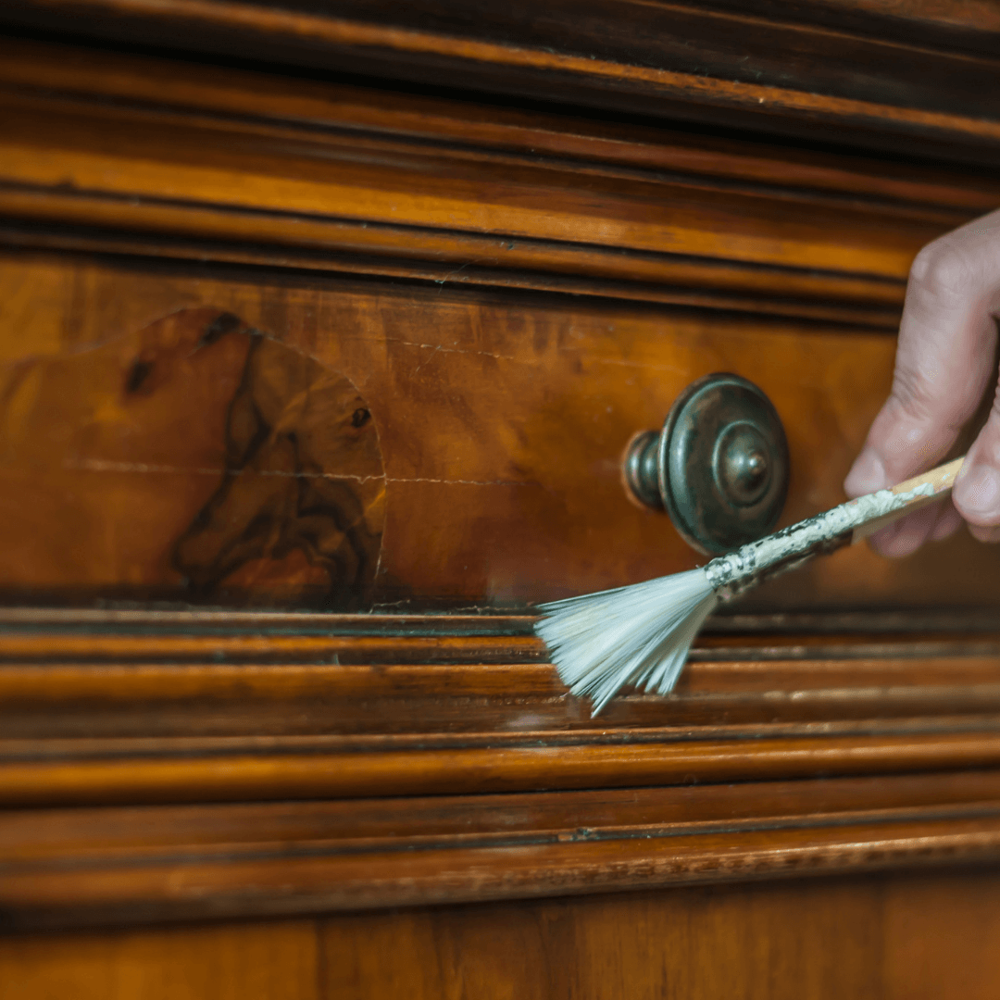

Перелік доступних послуг
-
Пошиття на замовлення

- Термін виконання: 14 днів
- Вартість: від 1500 грн
- Тип тканини для пошиття: бавовна, льон, вовна (тканина клієнта або майстерні)
- Гарантія: 30 днів
- Примірка: до 2 разів
-
Пошиття за викрійкою клієнта

- Термін виконання: 10 днів
- Вартість: від 1200 грн
- Тип тканини для пошиття: будь-яка тканина клієнта
- Гарантія: 30 днів
- Консультація з викрійки: безкоштовно
-
Пошиття штор та текстилю для дому

- Термін виконання: 12 днів
- Вартість: від 900 грн
- Тип тканини для пошиття: блекаут, оксамит, тюль
- Гарантія: 30 днів
- Виїзд заміру: за домовленістю
-
Підгін розміру

- Термін виконання: 3 дні
- Вартість: від 300 грн
- Тип тканини для пошиття: не потрібна (тканина виробу клієнта)
- Гарантія: 14 днів
- Терміновий підгін: за доплату
-
Ремонт блискавок

- Термін виконання: 2 дні
- Вартість: від 200 грн
- Тип тканини для пошиття: не потрібна (тканина виробу клієнта)
- Гарантія: 14 днів
- Заміна повзунка або тасьми
-
Реставрація виробів

- Термін виконання: 7 днів
- Вартість: від 800 грн
- Тип тканини для пошиття: підбирається під виріб (часто потрібна)
- Гарантія: 30 днів
- Підходить для вінтажних речей